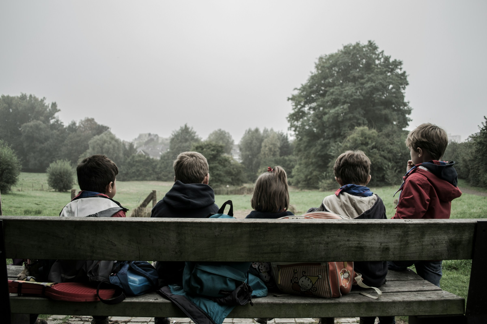

Build curiosity
the first step in discovering new things and growing progressively
Learn with socialize
Bringing up a sense of empathy, sharing, and caring.

Pour creativity
Empower their imagination